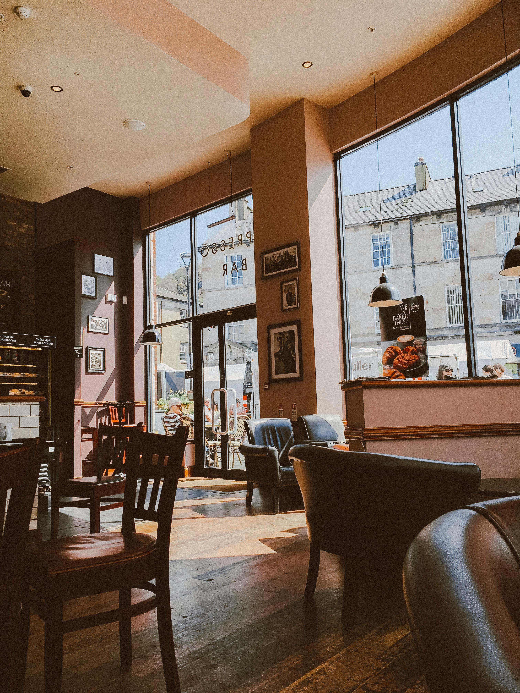
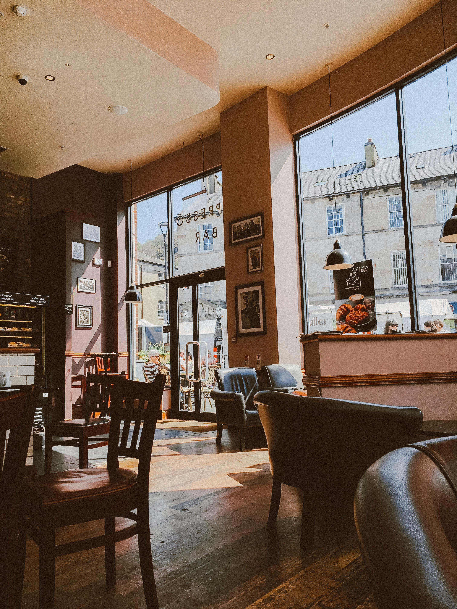
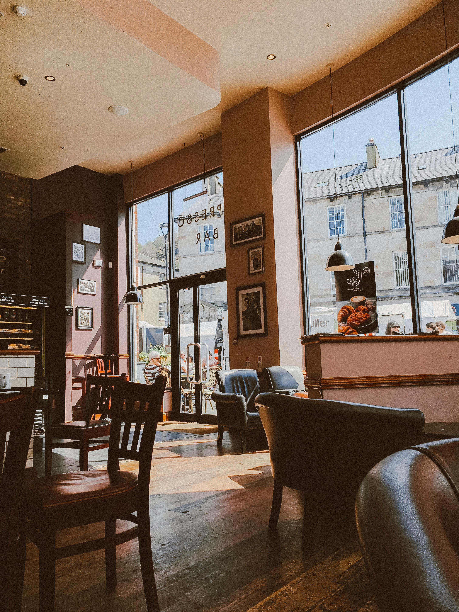

Cyber cafe, Game Spot o Gaming Factory son algunos nombres de cafés especializados para jugadores de videojuegos, espacios para que puedan ir socializar y simplemente disfrutar de su tiempo libre.
Galería

Preguntas Frecuentes
Es una cafeteria donde puedes jugar videojuegos.Como un cybercafé donde puedes rentar por horas según nuestros precios una consola o una computadora para jugar y al mismo tiempo consumir bebidas y postres, para saber más visita nuestra sección de Café.
Tenemos Nintendo Switch, Play Station 4 y 5 y varias computadoras para que puedas hacer uso de ellas.
No, solo puedes jugar con los videojuegos instalados en las consolas, pero si quieres seugerir algún juego puedes contactarnos o acercarte a cualquier empleado de Cozy Cavern.


 
